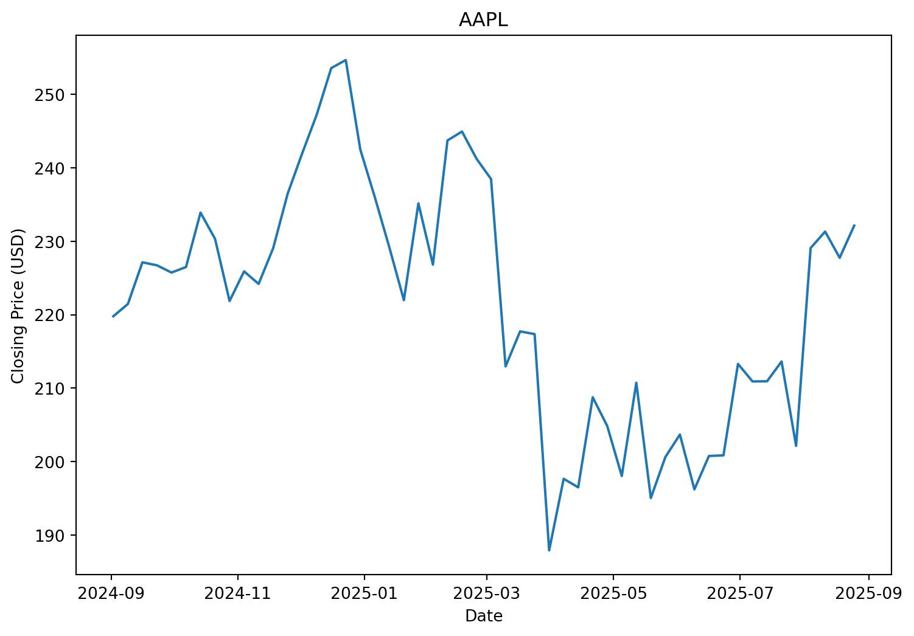
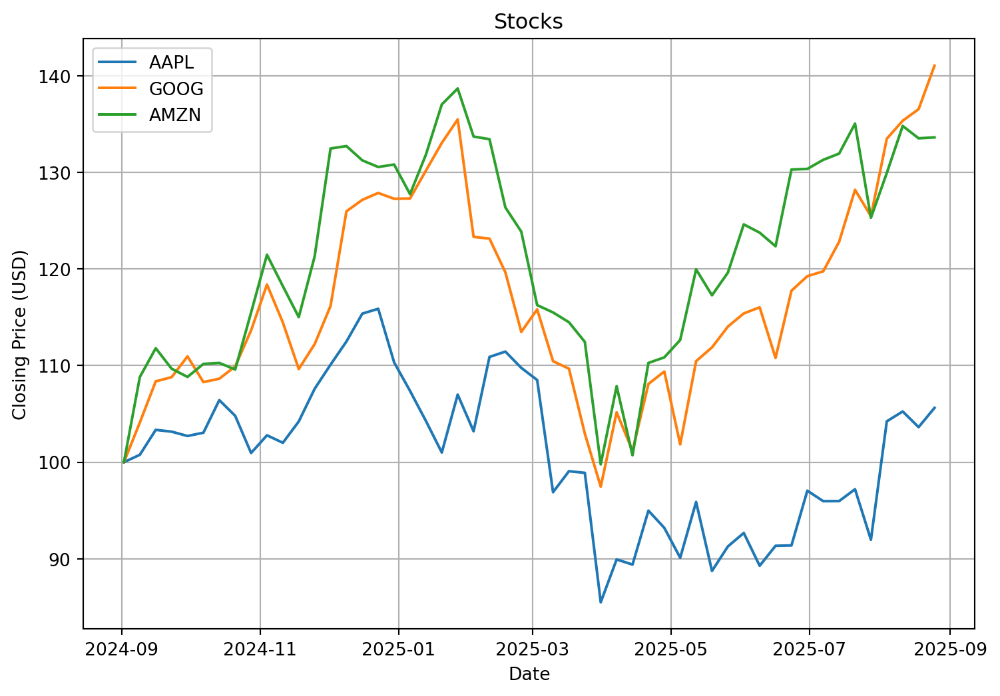
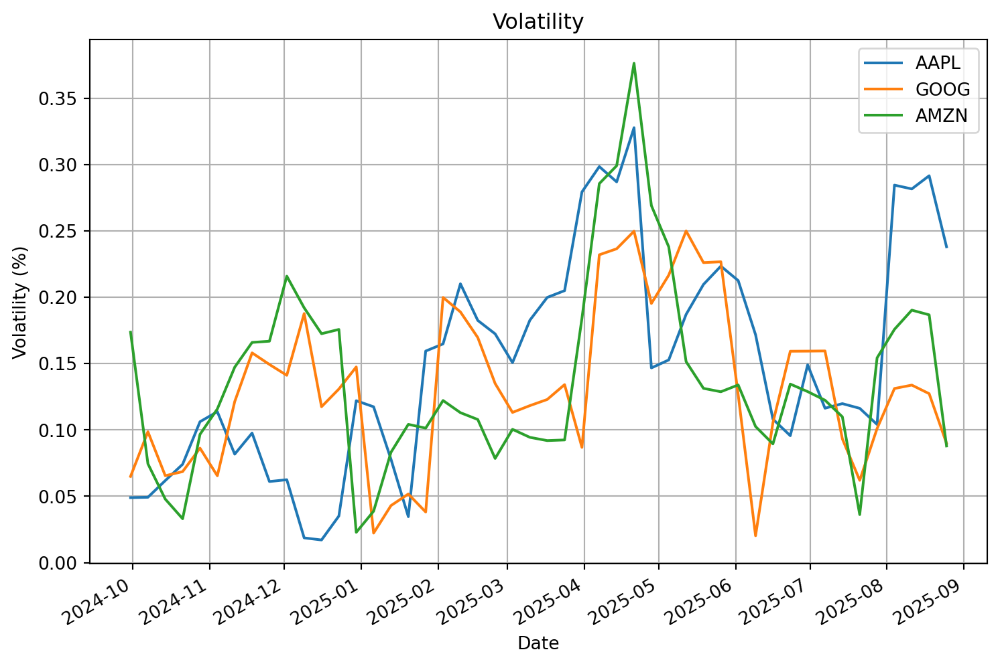
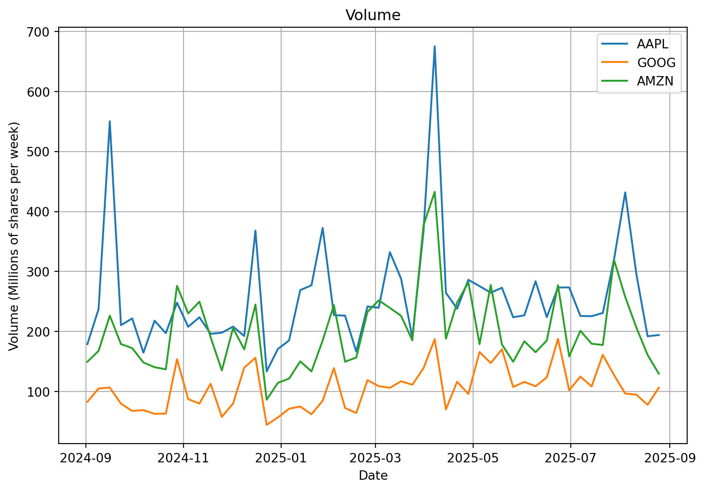

In this project, we will compare and analyze the stocks of Apple, Google, and Amazon by creating three key graphs:
Stock prices
Volatility
Volume
We will use yfinance to fetch the stock data and matplotlib to visualize the results.
Note
The dataset covers weekly stock data from September 2024 to September 2025.
1. 💰 Stock Price Analysis
Our first focus is on the closing prices of each stock, analyzed individually through three separate graphs.
1.1 Apple Stock Price
Code
import yfinance as yfimport matplotlib.pyplot as pltimport numpy as np# Choose stocks to comparestock_names = ["AAPL", "GOOG", "AMZN"]# Download stocksdata = yf.download(stock_names, start="2024-09-01", end="2025-09-01", interval="1wk", progress=False)# Store every stock separartelystock_data = []for stock_name in stock_names: stock_data.append(data.xs(stock_name, axis=1, level=1))# Extract the dates for the y axisx_values = stock_data[0].index# Extract the close value of every stocky_values = []for stock in stock_data: y_values.append(stock['Close'].values)# Display Apple stock pricesplt.figure(figsize=(9,6))plt.plot(x_values, y_values[0])plt.xlabel("Date")plt.ylabel("Closing Price (USD)")plt.title(stock_names[0])plt.show()

Figure 1: Apple stock price
During the period from September 2024 to September 2025, Apple’s stock remained relatively stable overall.
However, there was a significant peak in January, reaching over 250 USD per share. Conversely, the stock hit a notable low in April, dropping below 190 USD.
From September to March, the stock appears to have encountered resistance around 220 USD.
Amazon’s stock started around 170 USD per share in September 2024 and increased to 235 USD by September 2025, showing overall growth during the year.
Two notable low points occurred in April, while a peak near 240 USD appeared at the end of February.
There may be a support level around 235 USD, as the stock did not break above this level in December, July, and September.
1.4 Comparative Analysis
Now let’s analyze all three graphs together
Code
# Generate a graph containing all stocks# Normalize the pricey_values = []for stock in stock_data: y_values.append(stock['Close'] / stock['Close'].iloc[0] *100)plt.figure(figsize=(9,6))for i, y_value inenumerate(y_values): plt.plot(x_values, y_value, label=stock_names[i])plt.xlabel("Date")plt.ylabel("Closing Price (USD)")plt.title("Stocks")plt.legend() plt.grid(True)plt.show()

Figure 4: All stock prices
The prices have been normalized to show relative performance from September 2024, making it easier to compare returns across the stocks.
By September 2025, it is clear that Google and Amazon significantly outperformed Apple, both achieving over 35% growth for the year.
Apple experienced a decline between March and April but began rising again in August.
Google and Amazon generally move in the same direction, showing similar upward and downward trends.
Overall, Amazon delivered the highest return over the year, reaching close to 40%.
2. 📊 Volatility Analysis
Next, we analyze the volatility of the three stocks
Code
# Work on volatility# Find volatily valuesstock_return = []stock_data_clean = []for stock in stock_data: stock['Return'] = stock['Close'].pct_change() stock_data_clean.append(stock.dropna())# Compute the standard deviation stock['Volatility'] = stock['Return'].rolling(4).std() stock['Volatility'] = stock['Volatility'] * np.sqrt(13)# Plot volatility graphx_values = stock_data[0].indexy_values = []for stock in stock_data: y_values.append(stock['Volatility'].values)plt.figure(figsize=(9,6))for i, y_value inenumerate(y_values): plt.plot(x_values, y_value, label=stock_names[i])plt.title("Volatility")plt.xlabel("Date")plt.ylabel("Volatility (%)")plt.gcf().autofmt_xdate()plt.grid(True)plt.legend() plt.show()

Figure 5: All stock volatility
This graph shows different volatility trends for each stock over the period.
A noticeable spike occurs in May, with Amazon showing the highest volatility, followed by Apple. From January to February, all three stocks experienced relatively low volatility.
Between November and February, Amazon and Google had similar volatility levels, while Apple consistently showed the highest fluctuations.
There is a period from November to the end of December where Apple’s volatility deviated from the pattern seen in Google and Amazon.
In September 2025, Apple reaches the highest volatility peak among the three, although it begins to decrease afterward. Overall, the stocks display broadly similar volatility patterns.
3. 📦 Trading Volume Analysis
Finally, we examine the trading volume of the three stocks
Code
# Volume plotplt.figure(figsize=(9,6))for i, stock inenumerate(stock_data): plt.plot(x_values, stock['Volume'] /1e6, label=stock_names[i])plt.title("Volume")plt.xlabel("Date")plt.ylabel("Volume (Millions of shares per week)") plt.legend()plt.grid(True)plt.show()

Figure 6: All stock volume
This graph shows the trading volume from September 2024 to September 2025.
Several recurring patterns and spikes are visible. Apple clearly has the highest trading volume throughout the period. Volume spikes appear relatively regularly, and for Google, there seems to be a small spike roughly every one and a half months. Overall, Google shows the calmest trading activity.
Looking closer at Apple, there are significant volume peaks at the beginning of September and April. In September, the stock price moved only slightly, suggesting market uncertainty. In April, however, Apple’s price fell sharply from around 215 USD to below 190 USD, indicating a bearish trend with panic selling dominating the market.
Amazon also shows a volume peak in April, coinciding with Apple, and experienced a similar price drop during this period.
Google’s volume remained more stable than the other two stocks, even during the April peak, which is notable.
Since the data is recorded every week, some smaller peaks may be missing. Nevertheless, the increased volume in April aligns with the sharp decline in prices, confirming the market’s bearish movement at that time.
🎓 Conclusion
Through this analysis of Apple, Google, and Amazon from September 2024 to September 2025, several key observations emerge:
Key Findings
1. Stock Performance
Amazon and Google outperformed Apple over the year, with Amazon achieving nearly 40% returns. Apple remained relatively stable but experienced noticeable dips between March and April.
2. Volatility
Amazon consistently showed higher volatility, with a big spike in May, while Google had the lowest and most stable volatility. Apple’s volatility generally tracked Google and Amazon but occasionally diverged, notably from November to December.
3. Trading Volume
Apple had the highest trading volume, with notable spikes in September and April, signaling periods of market uncertainty and panic selling. Google’s volume was the calmest, while Amazon’s volume patterns mirrored Apple during key downturns.
Final Thoughts
Overall, the analysis highlights how price movements, volatility, and trading volume interact to reflect market behavior. Normalizing stock prices helped to compare relative performance, while volatility and volume provided additional context about risk and market activity. This project demonstrates the basics of stock analysis and sets a foundation for more advanced financial studies.